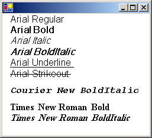

Практическое руководство. Создание частной коллекции шрифтов
PrivateFontCollection Класс наследует от FontCollection абстрактного базового класса. Можно использовать PrivateFontCollection объект для сохранения набора шрифты, специально для вашего приложения. Частной коллекции может включать установленных системных шрифтов, а также шрифты, которые не были установлены на компьютере. Чтобы добавить файл шрифта частной коллекции, вызовите AddFontFile метод PrivateFontCollection объекта.
Families Свойство PrivateFontCollection объект содержит массив FontFamily объектов.
Количество семейств шрифтов в частной коллекции не обязательно совпадает с количеством файлов шрифтов, которые были добавлены в коллекцию. Например предположим, что файлы, ArialBd.tff Times.tff и TimesBd.tff, добавленные в коллекцию. Будет существовать три файла, но только два семейства в коллекции, так как Times.tff и TimesBd.tff относятся к одному семейству.
Пример
В следующем примере добавляется следующих трех шрифта файлов PrivateFontCollection объекта:
C:\systemroot\Fonts\Arial.tff (Arial, обычный)
C:\systemroot\Fonts\CourBI.tff (Courier New, полужирный курсив)
C:\systemroot\Fonts\TimesBd.tff (Times New Roman, полужирным шрифтом)
Код извлекает массив FontFamily объектов из Families свойство PrivateFontCollection объекта.
Для каждого FontFamily объекта в коллекции, этот код вызывает IsStyleAvailable метод, чтобы определить, будут ли доступны различные стили (обычный, полужирный, курсив, полужирный курсив, подчеркнутый и зачеркнутый). Аргументы, передаваемые IsStyleAvailable метод являются членами FontStyle перечисления.
Если сочетание заданного семейства/стиля, Font создается с помощью этого и начертанием. Первый аргумент, переданный Font конструктор является имя семейства шрифтов (не FontFamily объекта, как в случае других вариантах Font конструктор). После Font объект создан, он передается DrawString метод Graphics класса, чтобы отобразить имя семейства, а также имя стиля.
Выходные данные следующий код аналогичен результат, показанный на следующем рисунке:

Arial.tff (который был добавлен в частную коллекцию шрифтов в следующем примере кода) — это файл шрифта Arial обычного стиля. Обратите внимание, что выходные данные программы показано несколько доступные стили, кроме обычных шрифт Arial семейства. Это потому, что GDI+ может имитировать полужирный, курсив и полужирный курсив обычного начертания. GDI+ Можно также создавать, зачеркивание и подчеркивание обычного начертания.
Аналогичным образом GDI+ можно имитировать полужирным курсивом стиль из полужирный стиль или курсивное начертание. Выходные данные программы показано, что полужирным курсивом стиля для семейства раз несмотря на то, что TimesBd.tff (Times New Roman, полужирный) является единственным файлом раз в коллекции.
PointF pointF = new PointF(10, 0);
SolidBrush solidBrush = new SolidBrush(Color.Black);
int count = 0;
string familyName = "";
string familyNameAndStyle;
FontFamily[] fontFamilies;
PrivateFontCollection privateFontCollection = new PrivateFontCollection();
// Add three font files to the private collection.
privateFontCollection.AddFontFile("D:\\systemroot\\Fonts\\Arial.ttf");
privateFontCollection.AddFontFile("D:\\systemroot\\Fonts\\CourBI.ttf");
privateFontCollection.AddFontFile("D:\\systemroot\\Fonts\\TimesBD.ttf");
// Get the array of FontFamily objects.
fontFamilies = privateFontCollection.Families;
// How many objects in the fontFamilies array?
count = fontFamilies.Length;
// Display the name of each font family in the private collection
// along with the available styles for that font family.
for (int j = 0; j < count; ++j)
{
// Get the font family name.
familyName = fontFamilies[j].Name;
// Is the regular style available?
if (fontFamilies[j].IsStyleAvailable(FontStyle.Regular))
{
familyNameAndStyle = "";
familyNameAndStyle = familyNameAndStyle + familyName;
familyNameAndStyle = familyNameAndStyle + " Regular";
Font regFont = new Font(
familyName,
16,
FontStyle.Regular,
GraphicsUnit.Pixel);
e.Graphics.DrawString(
familyNameAndStyle,
regFont,
solidBrush,
pointF);
pointF.Y += regFont.Height;
}
// Is the bold style available?
if (fontFamilies[j].IsStyleAvailable(FontStyle.Bold))
{
familyNameAndStyle = "";
familyNameAndStyle = familyNameAndStyle + familyName;
familyNameAndStyle = familyNameAndStyle + " Bold";
Font boldFont = new Font(
familyName,
16,
FontStyle.Bold,
GraphicsUnit.Pixel);
e.Graphics.DrawString(familyNameAndStyle, boldFont, solidBrush, pointF);
pointF.Y += boldFont.Height;
}
// Is the italic style available?
if (fontFamilies[j].IsStyleAvailable(FontStyle.Italic))
{
familyNameAndStyle = "";
familyNameAndStyle = familyNameAndStyle + familyName;
familyNameAndStyle = familyNameAndStyle + " Italic";
Font italicFont = new Font(
familyName,
16,
FontStyle.Italic,
GraphicsUnit.Pixel);
e.Graphics.DrawString(
familyNameAndStyle,
italicFont,
solidBrush,
pointF);
pointF.Y += italicFont.Height;
}
// Is the bold italic style available?
if (fontFamilies[j].IsStyleAvailable(FontStyle.Italic) &&
fontFamilies[j].IsStyleAvailable(FontStyle.Bold))
{
familyNameAndStyle = "";
familyNameAndStyle = familyNameAndStyle + familyName;
familyNameAndStyle = familyNameAndStyle + "BoldItalic";
Font italicFont = new Font(
familyName,
16,
FontStyle.Italic | FontStyle.Bold,
GraphicsUnit.Pixel);
e.Graphics.DrawString(
familyNameAndStyle,
italicFont,
solidBrush,
pointF);
pointF.Y += italicFont.Height;
}
// Is the underline style available?
if (fontFamilies[j].IsStyleAvailable(FontStyle.Underline))
{
familyNameAndStyle = "";
familyNameAndStyle = familyNameAndStyle + familyName;
familyNameAndStyle = familyNameAndStyle + " Underline";
Font underlineFont = new Font(
familyName,
16,
FontStyle.Underline,
GraphicsUnit.Pixel);
e.Graphics.DrawString(
familyNameAndStyle,
underlineFont,
solidBrush,
pointF);
pointF.Y += underlineFont.Height;
}
// Is the strikeout style available?
if (fontFamilies[j].IsStyleAvailable(FontStyle.Strikeout))
{
familyNameAndStyle = "";
familyNameAndStyle = familyNameAndStyle + familyName;
familyNameAndStyle = familyNameAndStyle + " Strikeout";
Font strikeFont = new Font(
familyName,
16,
FontStyle.Strikeout,
GraphicsUnit.Pixel);
e.Graphics.DrawString(
familyNameAndStyle,
strikeFont,
solidBrush,
pointF);
pointF.Y += strikeFont.Height;
}
// Separate the families with white space.
pointF.Y += 10;
} // for
Компиляция кода
Предыдущий пример предназначен для работы с Windows Forms и требует PaintEventArgs e, который является параметром PaintEventHandler.